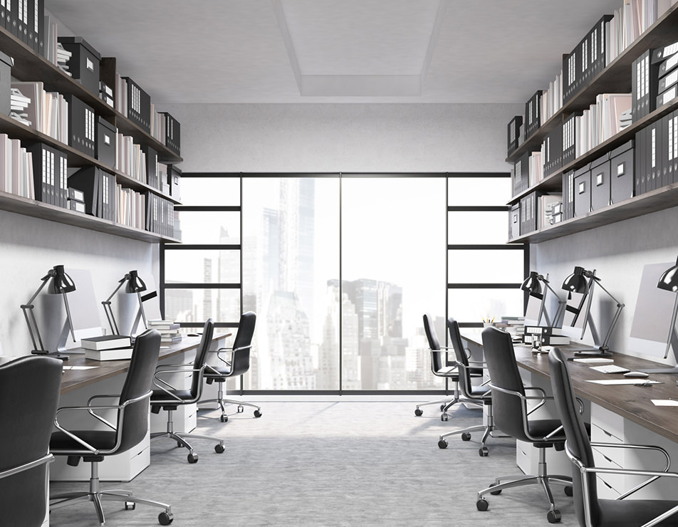
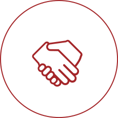
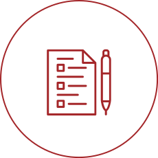
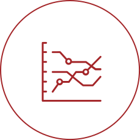
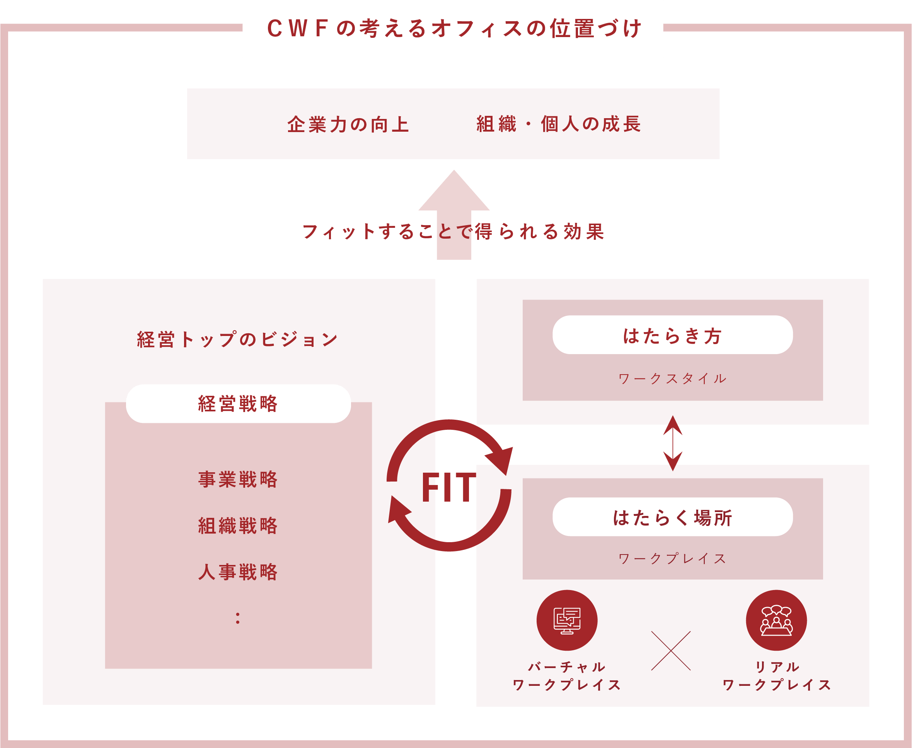
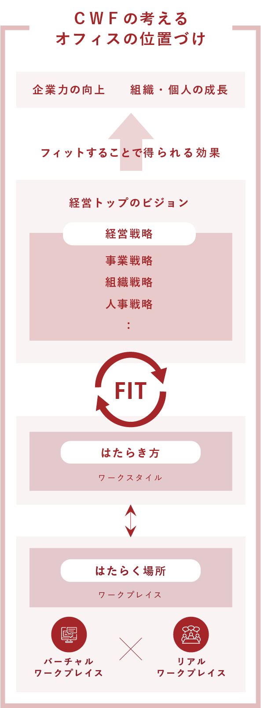
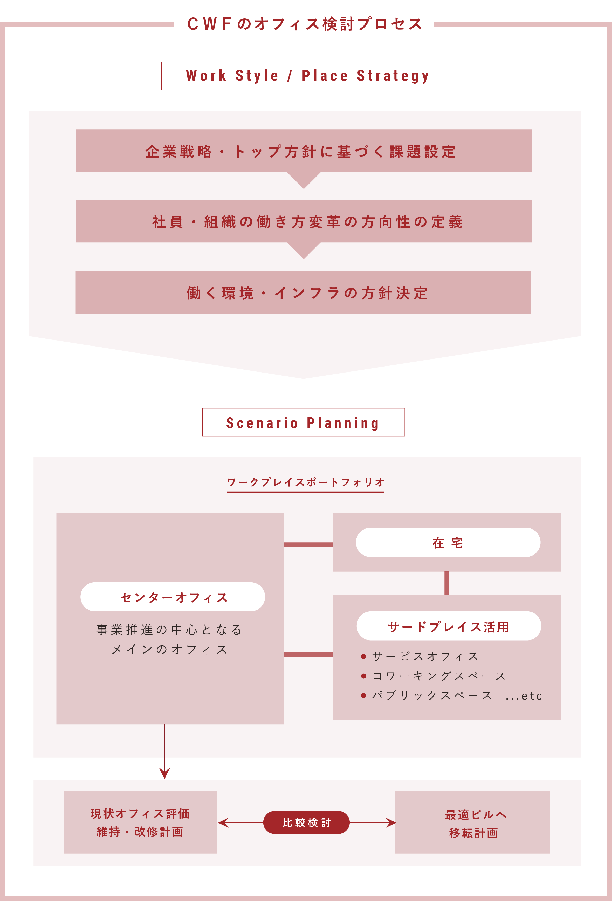
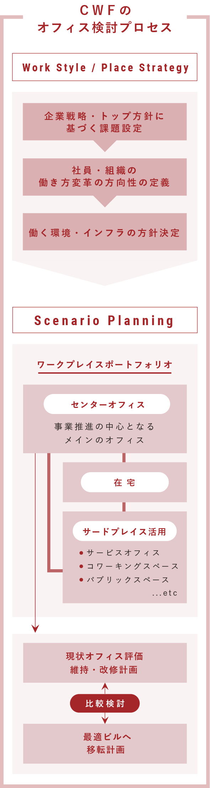

CONCEPT コンセプト
関わるすべての人の“勝ち”につながる
ワークプレイスづくり
ワークプレイスづくり
Competitive Workplace
すべての人が活き活きと働き活躍している。個人やチームの力が会社の力になって共に成長していく。
そんな個人と企業/組織のＷＩＮ-ＷＩＮな“はたらき方”を、ワークプレイスづくりを通して支えていくことが、
我々ＣＷＦがクライアントに提供する価値です。
そんな個人と企業/組織のＷＩＮ-ＷＩＮな“はたらき方”を、ワークプレイスづくりを通して支えていくことが、
我々ＣＷＦがクライアントに提供する価値です。
多様な人材が活躍し
企業としても成長する、
これからの“はたらき方”を考える
企業としても成長する、
これからの“はたらき方”を考える
ワーカーの年齢・家族構成／ライフスタイル等の変化が進んでおり、個人の活躍を維持するには、その多様な働き方のニーズを取り込む必要があります。一方で企業・組織として、新しい価値を生み出すチームとして機能する為には、ビジョンや目的を共有してつながり続ける“はたらき方”が求められます。トレードオフになりがちな２者の関係をバランスさせ、新たな視点から相乗効果の創出を図ります。
変化する“はたらき方”を
受容する
ワークプレイスを計画する
受容する
ワークプレイスを計画する
“はたらき方”が多様化している中で、各企業の働く環境の計画／運用の取り組みは、その変化に対応できていません。在宅やサードプレイス等、“はたらく場所“の選択肢が増え、それらを利用する中でまた更なるニーズやチャンスが生まれ、現在メインに使っているオフィスの役割も変化していきます。時限的な条件や画一的なアイディアに左右されず、ワークプレイスは変化に合せて常に更新するものと考えた計画を行います。

ＣＷＦのアプローチ
-
01企業としての方向性と
ワーカーの
“はたらき方”を
フィットさせる企業としての本質的な課題の解決に向けて、個人やチームのこれからのはたらき方をクライアントと一緒に考えていきます。空間としての計画・デザインに先行して、企業として目指すはたらき方のポイントを明確にして、各ワーカーの具体的な行動につなげていくコンセプトと計画づくりを行います。 -
02多様な選択肢から
ワークプレイス
づくりの
実行シナリオを考える目指すワークプレイスの方向性や基本計画を策定しても、その実現に向けては既存の施設での改修や移転、サードプレイスの活用などの様々な選択肢があります。単年度の視点だけでなく段階的な移行をふまえたシナリオを考えながら実行計画を立案します。 -
03専門家としてクライアントの目的の
実現に寄りそうプロジェクトサポートワークプレイスは構築段階でも、ビルオーナー、工事会社等と多岐にわたる交渉、
調整も必要です。スケジュールやコストの管理だけでなく、計画段階で意図したことを最終的な工事の完成や運用計画づくりに反映させるところまでプロフェッショナルとしてサポートいたします。



